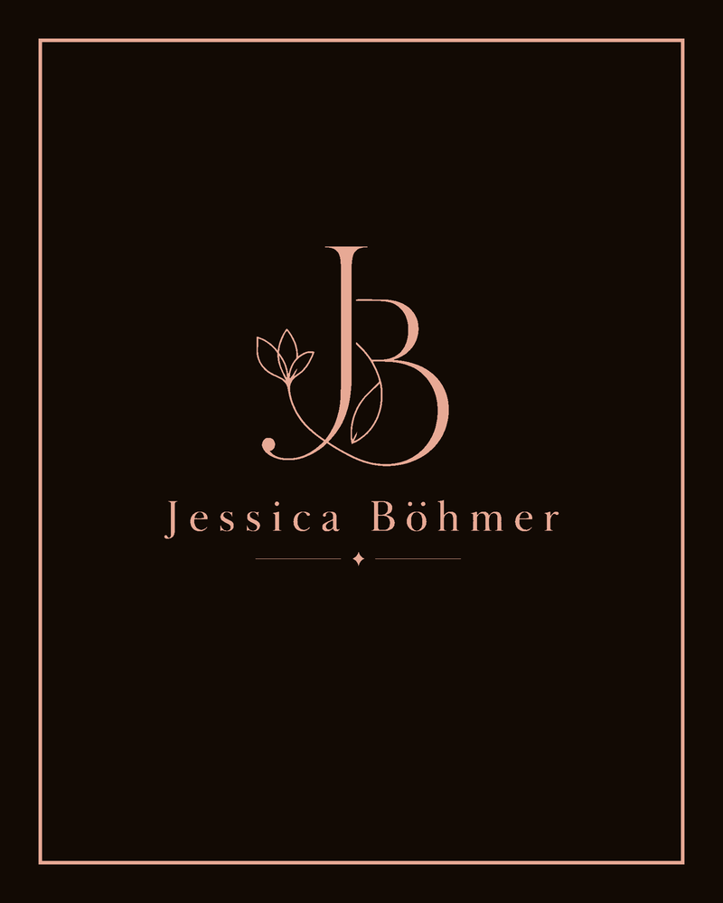

Entwurf · Hissfahne Boutique
Jessica Böhmer
Boutique-Fahne für den Eingangsbereich — beidseitig bedruckt, Blockout-Material, wasserabweisend.

Format
80 × 100 cm Hochformat
Material
Doubleface, Blockout-Kern
Druck
Beidseitig, 300 DPI
Farbe Fond
Bitterschokolade #120A04
Farbe Logo & Rahmen
Original-Peach #E7A995
Beschnittzugabe
3 mm rundum